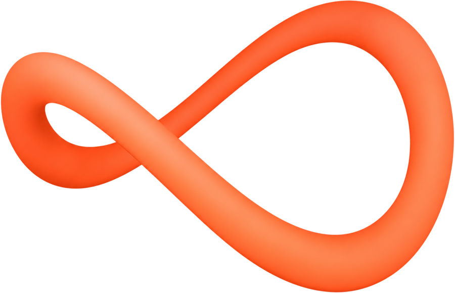

Tráfego·Sistemas·Sites
Role para entrar na estratégia
Estratégia, tecnologia e IA para empresas que querem vender mais, operar melhor e crescer com clareza.
Onde a Opus SoftWorks entra
Raramente o problema é só um. Quase sempre é aquisição, operação e presença digital puxando para lados diferentes. Trabalhamos nos três, na ordem que fizer sentido.
· Tráfego pago e aquisição
Campanhas em Meta e Google guiadas por números que importam: custo por cliente, taxa de fechamento e retorno sobre o investimento.
· Sistemas e automações
Entendemos como a operação funciona, eliminamos tarefas repetitivas e centralizamos as informações que hoje estão espalhadas.
· Sites que convertem
Em poucos segundos, o visitante entende o que a empresa faz, por que escolher você e qual é o próximo passo.
Como trabalhamos
Antes de propor, a gente entende.
Mergulhamos na operação, nas metas, nos números e nos gargalos para identificar o que realmente precisa ser resolvido.Prioridade antes de execução.
Definimos o que atacar primeiro, onde investir e quais indicadores vão mostrar, na prática, se estamos no caminho certo.O método
Tráfego, sistemas e presença digital trabalhando juntos, sob uma mesma estratégia, com dados que qualquer pessoa do time consegue olhar e entender.
Uma mesma estratégia
OpusSoftWorks
@opussoftworks
Tráfego pago, sistemas e sites.